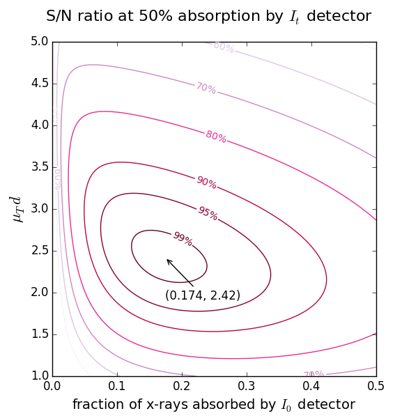
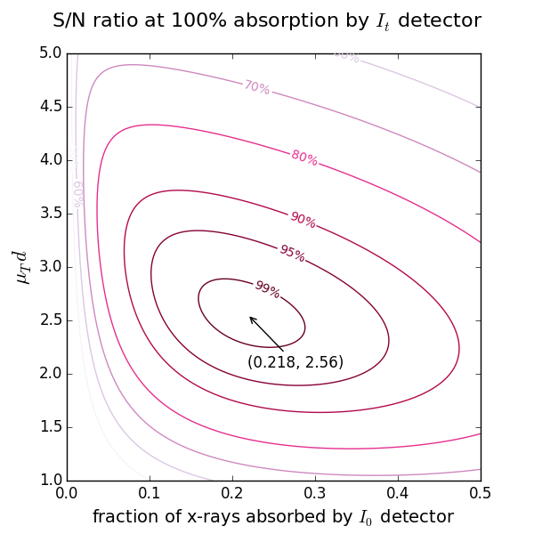

XAFSmass¶
| Release: | 1.3.1 |
|---|---|
| Date: | June 05, 2016 |
| Authors: | Konstantin Klementiev (MAX IV Laboratory), Roman Chernikov (DESY Photon Science) |
| License: | Open Source, MIT License |
A program for calculating the mass of XAFS [X-Ray Absorption Fine Structure] samples. The chemical formula parser understands parentheses and weight percentage, also in nested form. XAFSmassQt reports the quantity (weight, thickness or pressure) together with the expected height of the absorption edge.
Dependencies¶
numpy, pyparsing and matplotlib are required. Qt must be provided by either PyQt4, PyQt5 or PySide.
Get XAFSmass¶
XAFSmass is available as source distribution from here. The distribution archive also includes documentation.
Installation¶
Unzip the .zip file into a suitable directory and run python XAFSmassQt.py.
On Windows, run pythonw XAFSmassQt.py or give it a .pyw extension to
suppress the console window.
You may want to run python setup.py install in order to put the XAFSmass
package to the standard location.
Citing XAFSmass¶
Please cite XAFSmass as: K. Klementiev and R. Chernikov, “XAFSmass: a program for calculating the optimal mass of XAFS samples”, J. Phys.: Conf. Ser. **712** (2016) 012008, doi:10.1088/1742-6596/712/1/012008.
Theoretical references used¶
The tabulated scattering factors are taken from Henke et al. (10 eV < E < 30 keV) [Henke], Chantler (11 eV < E < 405 keV) [Chantler] and Brennan & Cowan (30 eV < E < 509 keV) [BrCo].
| [Henke] | http://henke.lbl.gov/optical_constants/asf.html B.L. Henke, E.M. Gullikson, and J.C. Davis, X-ray interactions: photoabsorption, scattering, transmission, and reflection at E=50-30000 eV, Z=1-92, Atomic Data and Nuclear Data Tables 54 (no.2) (1993) 181-342. |
| [Chantler] | http://physics.nist.gov/PhysRefData/FFast/Text/cover.html http://physics.nist.gov/PhysRefData/FFast/html/form.html C. T. Chantler, Theoretical Form Factor, Attenuation, and Scattering Tabulation for Z = 1 - 92 from E = 1 - 10 eV to E = 0.4 - 1.0 MeV, J. Phys. Chem. Ref. Data 24 (1995) 71-643. |
| [BrCo] | http://www.bmsc.washington.edu/scatter/periodic-table.html ftp://ftpa.aps.anl.gov/pub/cross-section_codes/ S. Brennan and P.L. Cowan, A suite of programs for calculating x-ray absorption, reflection and diffraction performance for a variety of materials at arbitrary wavelengths, Rev. Sci. Instrum. 63 (1992) 850-853. |
Usage¶
Chemical formula parser¶
The parser understands chemical elements, optionally followed by atomic quantities or weight percentages. A group of atoms can be enclosed in parentheses and assigned a common quantity or wt%. Some examples are given above the edit line. For example, Cu%1Zn%1((Al2O3)%10SiO2) means 1 wt% of Cu and 1 wt% of Zn in an aluminosilicate matrix composed of 10 wt% of alumina in silica.
For the search of an unknown elemental concentration, give x to the element of interest.
Calculation of mass and absorption step for powder samples¶
Note
You typically do not need the calculated values at exactly the edge position but rather at an energy somewhere above it. The list of edges offers the edge positions plus 50 eV. You are free to specify any energy within the range of the selected tabulation.
A typical application is the calculation of the mass for a powder sample. The optimal optical sample thickness μd depends on the absorption levels selected for the ionization chambers (see below). Typically, μd is between 2 and 3 (e.g. for a 17.4% absorption level for the 1st chamber and a 50% level for the 2nd chamber, the optimal thickness is 2.42). However, if you get the absorption step more that 1.5 (reported by the drop-down list “absorptance step = ”), it is recommended to reduce the sample mass to avoid the potential thickness effect due to possible inhomogeneity in the wafer. If your sample is diluted and you get a very low absorption step, do not try to make the wafer thicker hoping that you will get better spectra – you will not: The optimal thickness gets the best signal-to-noise ratio (it is in this sense the optimal). You can only try to measure your absorption spectra with another registration technique: in fluorescence or electron yield modes.
 {kind=link}
{kind=link}
Calculation of thickness and absorption step for samples with known density¶
Here you can calculate the thickness of the sample with known density (usually, a foil). Commercial foils are highly homogeneous in thickness, so that you may ignore large step jumps and pay attention to the total μd only.
Calculation of gas pressure for ionization chambers¶
Caution
For nitrogen, do not forget the 2: N2, not just N!
Start with the 2nd ionization chamber (IC). If a reference foil is placed between the 2nd and the 3rd IC, the fraction of x-rays absorbed by the 2nd IC is usually set to 50%. If the reference foil is not needed, one can select the total absorption (100%). For these two cases the optimal absorption of the 1st IC at a certain μd is found from the figures above showing the levels of signal-to-noise ratio.
Calculation of an unknown elemental concentration¶
Case 1: You know the composition of the matrix¶
You need an absorption spectrum taken without the sample (empty spectrum) but with the same state of the ionization chambers. You then subtract it from the spectrum of the sample, e.g. in VIPER, and get a real (i.e. not vertically shifted) absorption coefficient. Determine the value of μd above the edge (μTd), the edge jump (Δμd) and its uncertainty (δμd). Specify the chemical formula with x.
Case 2: You know the sample mass and area¶
Determine the edge jump (Δμd). For the pure element find such a value for μTd that the absorption step in the pull-down list was equal to your experimental Δμd. This will give you the mass of the element of interest. Just divide it by the total mass to get the weight percentage.
Finding the scattering factors f’‘¶
If you need to know the scattering factor f’’ at different energies and/or its jump at an edge (Δf’‘), XAFSmass provides a graphical tool for this.
For example, you may need these values to determine the composition of a binary compound if you have the experimental edge heights at two edges. The absorption step Δμd at an absorption edge of energy E is proportional to Δf’‘ν/E, where ν is the amount of (resonantly) absorbing atoms in mole. Hence, the atomic ratio of two elements in the same sample is \(\nu_A/\nu_B = (\Delta\mu d)_A/(\Delta\mu d)_B\cdot[\Delta f_A'' /\Delta f_B'' \cdot E_A/E_B]\). For binary compounds \({\rm A}_x{\rm B}_{1-x}\) the concentration \(x\) is calculated then as \(x = (\nu_A/\nu_B)/[1+(\nu_A/\nu_B)]\).